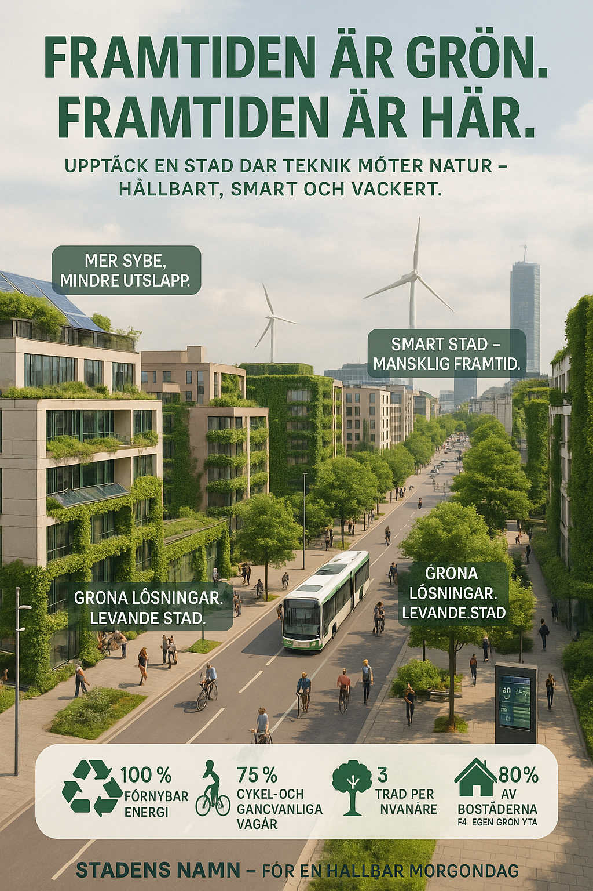

KAMPANJ
Affish ett
Affish två

Välkommen till Silverviken. En grön, innovativ och växande stad där du får det bästa av både småstadsliv och storstadsliv. En kustnära stad med stor stand, klippor och skärgård. Moderna kommunala och privata skolor och på Silveruniversitetet studerar runt 500 personer program som elektroteknik, mikrobiologi och UX-Design. En smart stad med gratis uppkoppling var du är befinner dig, gratis elcyklar att låna och gratis laddstolpar för dina gröna äventyr. På Storgatan hittar du pulsen i staden och ett stort utbud av shopping, kaféer, restauranter och andra nöjen. Inte långt därifrån hittar du Kvarteret som är en modern hub för teknik och utvecklingsföretag. Här sitter både medelstora och internationella företag. Vill man ha det lite lugnare så finns det gott om löpspår, idrottsfaciliteter och Stadsparken bjuder ofta på en grön stund. Vi ses i Silverviken!
Välkommen till Silverviken – en grön och innovativ stad där framtiden redan har flyttat in. Här möts hållbar arkitektur, smart teknik och natursköna miljöer i en levande stadspuls. Med energieffektiva hem, cykelvänliga gator och nära till både service och natur, erbjuder Silverviken en livsstil där du kan leva modernt – med omtanke om både människa och miljö. Upptäck en plats där innovation blomstrar och varje dag känns lite grönare. Silverviken – framtidens stad, redan idag.
Upptäck Silverviken – en smart stad designad för framtidens liv. Här möts digital innovation, hållbarhet och bekvämlighet i perfekt harmoni. Med intelligenta transportsystem, uppkopplade hem och effektiva energilösningar får du en vardag som är både enklare och mer hållbar. Silverviken är inte bara en plats att bo – det är en plats att leva smart. Silverviken – där tekniken jobbar för dig.
Välkommen till Silverviken – småstaden med storstadens puls. Här får du det bästa av två världar: tryggheten och gemenskapen i en charmig småstad, kombinerat med nöjen, kultur och service i storstadsklass. Allt inom bekvämt avstånd och inramat av vacker natur. I Silverviken lever du stort, utan att behöva välja bort det lilla. Silverviken – småstadskänsla, storstadsliv.